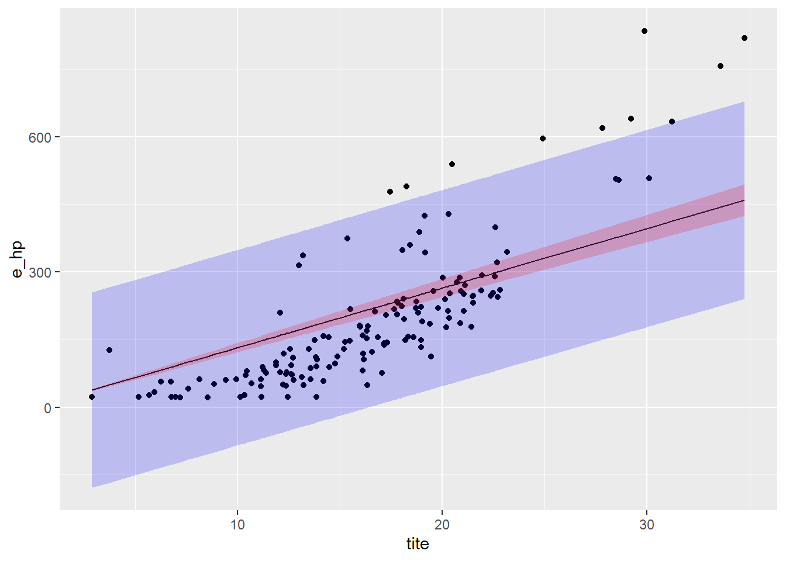
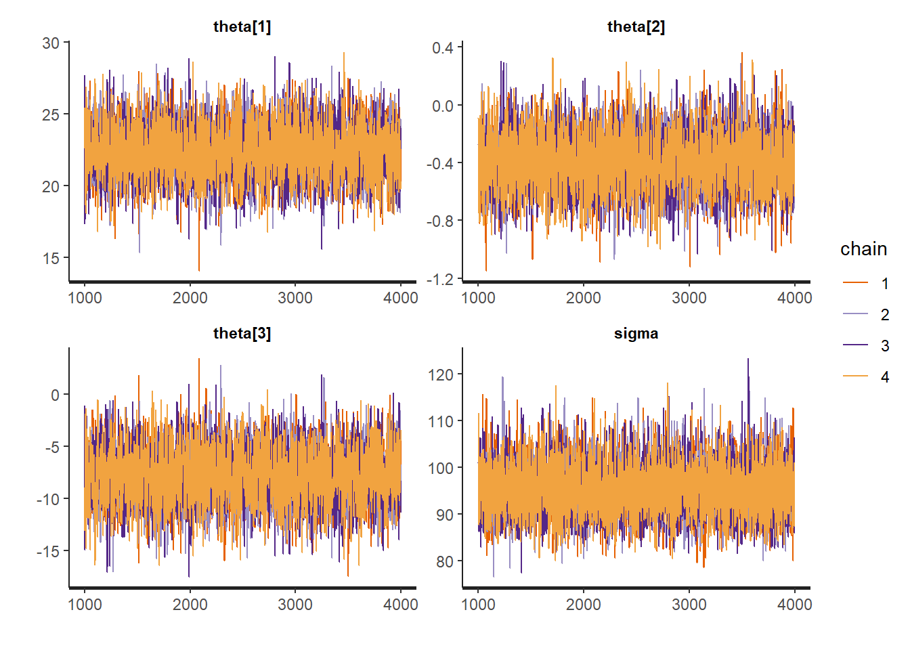
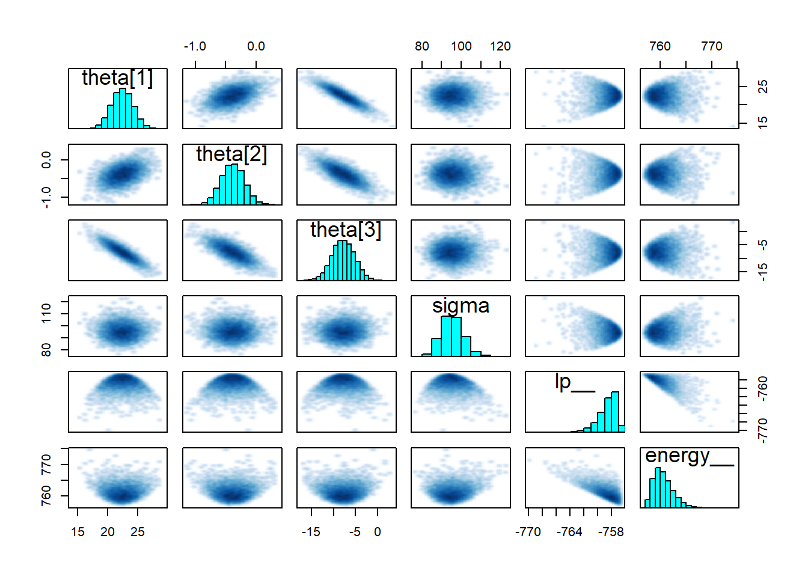

Chapter 4 Ordinary linear regression
4.1 Introduction to OLR
Linear regression models are usually the first example shown in most statistical learning lectures. They are a popular introduction to statistical modelling because of their simplicity, while their structure is flexible and applicable to quite a large range of physical systems.
We consider an output variable \(y\), and a set of explanatory variables \(x=(x_1,...,x_k)\), and assume that a series of \(n\) values of \(y_i\) and \(x_{i1},...x_{ik}\) have been recorded. The ordinary linear regression model states that the distribution of \(y\) given the \(n\times k\) matrix of predictors \(X\) is normal with a mean that is a linear function of \(X\): \[\begin{equation} E(y_i|\theta, X) = \theta_0 + \theta_1 x_{i1} + ... + \theta_k x_{ik} \tag{4.1} \end{equation}\] The parameter \(\theta\) is a vector of \(k\) coefficients which distribution is to be determined. Ordinary linear regression assumes a normal linear model in which observation errors are independent and have equal variance \(\sigma^2\). Under these assumptions, along with a uniform prior distribution on \(\theta\), the posterior distribution for \(\theta\) conditional on \(\sigma\) can be explicitely formulated: \[\begin{align} \theta | \sigma, y & \sim N\left( \hat{\theta} , V_\theta \sigma^2\right) \tag{4.2} \\ \hat{\theta} & = (X^T \, X)^{-1} X^T \, y \tag{4.3}\\ V_\theta & = (X^T \, X)^{-1} \tag{4.4} \end{align}\] along with the marginal distribution of \(\sigma^2\): \[\begin{align} \sigma^2|y & \sim \mathrm{Inv-}\chi^2(n-k, s^2 ) \tag{4.5} \\ s^2 & = \frac{1}{n-k}(y-X\hat{\theta})^T (y-X\hat{\theta}) \tag{4.6} \end{align}\]
In the words of Gelman et al. (2013) : “in the normal linear model framework, the first key statistical modelling issue is defining the variables \(x\) and \(y\), possibly using transformations, so that the conditional expectation of \(y\) is reasonably linear as a function of the columns of \(X\) with approximately normal errors.” The second main issue, related to a Bayesian analysis framework, is a proper specification of the prior distribution on the model parameters.
Despite their simplicity, linear regression models can be very useful as a first insight into the heat balance of a building: they allow a quick assessment of which types of measurements have an impact on the global balance and guide the choice of more detailed models. Moreover, if a large enough amount of data is available, the estimates of some coefficients such as the HTC often turn out to be quite reliable.
The ordinary linear regression model is enough to explain the variability of the data if the regression errors \(y_i - E(y_i|\theta, X)\) are independent, identically distributed along a normal distribution with constant variance \(\sigma^2\). If that is not the case, the model can be extended in several ways.
- The expected value \(E(y_i|\theta, X)\) may be non-linear or include non-linear transformations of the explanatory variables.
- Unequal variances and correlated errors can be included by allowing a data covariance matrix \(\Sigma_y\) that is not necessarily proportional to the identity matrix: \(y \sim N(X\theta, \Sigma_y)\).
- A non-normal probability distribution can be used.
These transformations invalidate the analytical solutions shown by Eq. (4.3) to (4.6), but we will see that Bayesian inference can treat them seamlessly.
4.2 Tutorial: OLR with R
The data used in this example was published by the Oak Ridge National Laboratory, Building Technologies Research and Integration Center (USA). It contains end use breakdowns of energy use and various indoor environmental conditions collected at the Campbell Creek Research House #3, at a 15 minute time stamp. The data availability ranges from 10/1/2013 to 9/30/2014 and was made available on OpenEI. For this notebook, the original data set was reduced by removing many columns and averaging measurements over daily time steps.
This tutorial uses R, and more specifically functions from the tidyverse, a great data science environment. The reader is referred to the book R for data science to learn about each of them.
In the following block:
read_csv, from readr, reads csv files- The
%>%operator is the pipe from magrittr transform(), from dplyr, modifies a variable in a tableymd, from lubridate, reads a string into a date with a specific format. lubridate is not included in the tidyverse and has to be imported separately.
library(tidyverse)
library(lubridate)
df <- read_csv("data/linearregression.csv") %>% transform(TIMESTAMP = ymd(TIMESTAMP))
head(df)## TIMESTAMP e_hp e_dhw e_fan e_other ti tg ts
## 1 2013-11-01 22.76562 36.42188 9.866156 227.1703 24.08979 19.50503 12.687269
## 2 2013-11-02 22.94271 32.01042 9.985406 232.4833 22.71608 18.40336 8.639988
## 3 2013-11-03 23.07250 28.19500 9.977400 226.7301 21.18138 17.36883 10.676611
## 4 2013-11-04 49.60208 58.77083 10.032833 228.3963 20.66780 16.77118 11.524884
## 5 2013-11-05 23.09896 57.51042 10.008042 301.6326 20.97978 16.91042 11.532292
## 6 2013-11-06 23.00521 55.95312 10.292667 280.0146 21.40096 17.36753 13.797685
## te i_sol wind_speed
## 1 17.138426 125.65963 0.9309792
## 2 10.260706 90.86609 0.6845729
## 3 7.348556 113.59297 0.9137600
## 4 8.462442 116.15323 0.3336250
## 5 10.836343 108.98073 0.3369687
## 6 14.630382 87.00867 0.3273958Starting from out “main” equations of simplified building energy modelling (see Chap. 2) we assume steady-state conditions: \(\partial T / \partial t = 0\). This should be a reasonable assumption, because the time step resolution of the data is daily. In winter, the house is heated by a heat pump. Considering the available data, here is the full model by which we describe the heat balance of the house:
\[\begin{equation} \Phi_{hp} + \Phi_s + \Phi_v + \Phi_{inf} = H \, (T_i-T_e) + H_g \, (T_i-T_g) \tag{4.7} \end{equation}\]
On the left side are the heat sources \(\Phi\) (W), some of which may be negative:
- \(\Phi_{hp} \propto e_{hp}\) is the heating power provided by the heat pump to the indoor space. It is proportional to the energy reading \(e_{hp}\) (Wh), which we will use as output variable, and to the time step size and the COP of the heat pump, supposed constant.
- \(\Phi_s \propto I_{sol}\) are the solar gains, supposed proportional to the measured outdoor solar irradiance \(I_{sol}\) (W/m\(^2\)) and an unknown constant solar aperture coefficient \(A_s\) (m\(^2\)).
- \(\Phi_v = \dot{m} \, c_p \, (T_s-T_i)\) is the ventilation heat input, with a ventilation supply rate \(\dot{m}\) and supply temperature \(T_s\), which is measured (the house has a mechanical ventilation system with heat recovery)
- \(\Phi_{inf} \propto V_{ws} (T_e-T_i)\) is the heat input from air infiltration. We suppose it is proportional to the wind speed \(V_{ws}\) and the outdoor-indoor temperature difference.
On the right side are two terms of heat loss through the envelope:
- \(H \, (T_i-T_e)\) is the direct heat loss from the heated space at temperature \(T_i\) to the outdoor at \(T_e\)
- \(H_g \, (T_i-T_g)\) is the heat loss through the partition wall between the heated space and an unheated garage at \(T_g\).
Linear regression should allow us to identify the coefficients of each term, supposing that they have enough variability and influence on the output \(\Phi_{hp}\). The outcome of the regression method will let us judge if this hypothesis is appropriate.
4.3 Simple linear regression with R
Before fitting the full model shown above, let us try one with a single explanatory variable, which we assume has the most influence on the energy use of the heat pump: the heat transmission through the envelope.
\[\begin{equation} e_{hp} = \theta_1 (T_i-T_e) \tag{4.8} \end{equation}\]
where the \(\theta_1\) parameter includes the heat loss coefficient \(H\), the COP of the heat pump and the time step size. Since the COP is unknown, we won’t be able to estimate \(H\). This is fine, as the point of the exercise is mostly to identify influential features. \(\theta_0\) is a constant intercept.
First, we need to add \(T_i-T_e\) as a new column of the dataframe. Then we use this column as the only explanatory variable in R’s linear regression function. An intercept is included by default: the + 0 part of the expression is used here to remove it.
df <- df %>% mutate(tite = ti - te)
lm1.fit = lm(e_hp ~ tite + 0, data=df)
summary(lm1.fit)##
## Call:
## lm(formula = e_hp ~ tite + 0, data = df)
##
## Residuals:
## Min 1Q Median 3Q Max
## -166.91 -86.02 -49.12 -8.52 439.43
##
## Coefficients:
## Estimate Std. Error t value Pr(>|t|)
## tite 13.2377 0.5113 25.89 <2e-16 ***
## ---
## Signif. codes: 0 '***' 0.001 '**' 0.01 '*' 0.05 '.' 0.1 ' ' 1
##
## Residual standard error: 109.7 on 150 degrees of freedom
## Multiple R-squared: 0.8171, Adjusted R-squared: 0.8159
## F-statistic: 670.2 on 1 and 150 DF, p-value: < 2.2e-16The table displays the results of the linear regression fitting by ordinary least squares. Some indicators are useful to judge if the model sufficiently explains the output data, or if some input features are redundant.
- The t-statistic and p-value indicate whether an input has a significant influence on the input:
P>|t|should be close to zero, meaning that the null hypothesis should be rejected. In this case, the only input is relevant. - R-squared measures the goodness of fit of the regression. 0.817 is a rather low value, which hints that the output should be explained by additional features in the model.
- Other values like AIC, BIC or the Durbin-Watson statistic can be calculated. DW indicates whether there is autocorrelation of the residuals.
The output variable is not well explained solely by a linear function of \((T_i-T_e)\), and the model should be improved. We can confirm this with a graph of the confidence interval and prediction interval of the fitted linear model:
conf.int = as.data.frame( predict(lm1.fit, interval="confidence") )
pred.int = as.data.frame( predict(lm1.fit, interval="prediction") )
ggplot() +
geom_point(data = df, aes(tite, e_hp)) +
geom_line(aes(x=df$tite, y=pred.int$fit)) +
geom_ribbon(aes(x=df$tite, ymin=pred.int$lwr, ymax=pred.int$upr), alpha=0.2, fill='blue') +
geom_ribbon(aes(x=df$tite, ymin=conf.int$lwr, ymax=conf.int$upr), alpha=0.2, fill='red')
I argued in Sec. 3.2.5 that residual analysis was the most appropriate way to correctly validate a model, but it won’t be necessary here since the fit is simply not good.
Now we can try a more complete linear regression model, which matches the full model described earlier
\[\begin{equation} e_{hp} = \theta_1 (T_i-T_e) + \theta_2 (T_i-T_g) + \theta_3 I_{sol} + \theta_4 (T_i-T_s) + \theta_5 V_{ws}(T_i-T_e) \tag{4.9} \end{equation}\]
This model has five input variables. There are some more variables that need to be added to the dataframe to account for:
- The heat loss towards the unheated garage at temperature \(T_g\)
- The ventilation heat supply \(\Phi_v \propto (T_s-T_i)\)
- The air infiltration heat loss \(\Phi_{inf} \propto V_{ws} (T_e-T_i)\)
df <- df %>% mutate(titg = ti - tg,
tits = ti - ts,
vtite = wind_speed * (ti-te))
lm2.fit = lm(e_hp ~ tite + titg + i_sol + tits + vtite + 0, data=df)
summary(lm2.fit)##
## Call:
## lm(formula = e_hp ~ tite + titg + i_sol + tits + vtite + 0, data = df)
##
## Residuals:
## Min 1Q Median 3Q Max
## -211.35 -80.19 -28.12 22.40 323.54
##
## Coefficients:
## Estimate Std. Error t value Pr(>|t|)
## tite 22.134160 2.190009 10.107 <2e-16 ***
## titg 1.673180 5.849859 0.286 0.7753
## i_sol -0.373744 0.198848 -1.880 0.0622 .
## tits -8.479184 3.621594 -2.341 0.0206 *
## vtite 0.002483 0.735571 0.003 0.9973
## ---
## Signif. codes: 0 '***' 0.001 '**' 0.01 '*' 0.05 '.' 0.1 ' ' 1
##
## Residual standard error: 95.34 on 146 degrees of freedom
## Multiple R-squared: 0.8656, Adjusted R-squared: 0.861
## F-statistic: 188 on 5 and 146 DF, p-value: < 2.2e-16The R-squared has improved: this model seems to be a better choice than the first one.
Two input variables however have a very high \(p\)-value: \((T_i-T_g)\) and \(V_{ws}(T_i-T_e)\). This suggests that the heat transfer between the heated space and the garage, and the wind, have little impact on the energy consumption of the heat pump. We can simplify the model by removing these two features:
lm3.fit = lm(e_hp ~ tite + i_sol + tits + 0, data=df)
summary(lm3.fit)##
## Call:
## lm(formula = e_hp ~ tite + i_sol + tits + 0, data = df)
##
## Residuals:
## Min 1Q Median 3Q Max
## -209.27 -81.17 -28.52 26.60 323.60
##
## Coefficients:
## Estimate Std. Error t value Pr(>|t|)
## tite 22.4237 1.7835 12.573 < 2e-16 ***
## i_sol -0.3878 0.1891 -2.050 0.04209 *
## tits -7.7897 2.6010 -2.995 0.00322 **
## ---
## Signif. codes: 0 '***' 0.001 '**' 0.01 '*' 0.05 '.' 0.1 ' ' 1
##
## Residual standard error: 94.72 on 148 degrees of freedom
## Multiple R-squared: 0.8655, Adjusted R-squared: 0.8628
## F-statistic: 317.5 on 3 and 148 DF, p-value: < 2.2e-16The R-squared was not really impacted by the removal of two features, suggesting that they were indeed not influential. We can display a quick residual analysis, to see if the model sufficiently explains the variability of the data:
par(mfrow=c(2,2))
plot(lm3.fit)
This linear regression model is not perfect but it looks like a decent compromise of simplicity and fitness. In particular, the “residuals vs fitted” graph shows highly non-normal residuals at high values of the dependent variable.
4.4 Bayesian regression with Stan
We will now conduct linear regression in a Bayesian framework, as explained in Sec. 3.1. We use the Stan probabilistic programming language, which allows full Bayesian statistical inference. A Stan model is a block of text which can either be written in a separate file, or in the same script as the current code. A model defined in its own file can then be called within either language: R, Python, Julia…
library(rstan)We previously selected a linear model with three predictors (T_i-T_e), I_{sol} and (T_i-T_s). The model can be written in probability form: each of the data points e_{hp,n} is normally distributed with a constant noise standard deviation \(\sigma\):
\[\begin{equation} e_{hp,n} \sim N( \theta_1 (T_i-T_e)_n + \theta_2 I_{sol,n} + \theta_3 (T_i-T_s)_n, \sigma) \tag{4.10} \end{equation}\]
Of course, the Stan documentation has an example of linear regression model. The following block defines a model with any number of predictors K, and no intercept.
lr_model= "
data {
int<lower=0> N; // number of data items
int<lower=0> K; // number of predictors
matrix[N, K] x; // predictor matrix
vector[N] y; // outcome vector
}
parameters {
vector[K] theta; // coefficients for predictors
real<lower=0> sigma; // error scale
}
model {
y ~ normal(x * theta, sigma); // likelihood
}
"Then, a list called model_data is created, which maps each part of the data to its appropriate variable into the STAN model. This list must contain all variables defined in the data block of the model.
model_data <- list(
N = nrow(df),
K = 3,
x = df %>% select(tite, i_sol, tits),
y = df$e_hp
)Now that the model has been specified and the data has been mapped to its variables, the syntax for model fitting is below.
fit1 <- stan(
model_code = lr_model, # Stan program
data = model_data, # named list of data
chains = 4, # number of Markov chains
warmup = 1000, # number of warmup iterations per chain
iter = 4000, # total number of iterations per chain
cores = 2, # number of cores (could use one per chain)
)Fitting may result in a number of warnings, telling us that some problems may have occurred: divergent transitions, large R-hat values, low Effective Sample Size… Obtaining a fit without these warnings takes some practice but is essential for an unbiased interpretation of the inferred variables and predictions. A guide to Stan’s warnings and how to address them is available here.
Stan returns an object (called fit1 above) from which the distributions of outputs and parameters of the fitted model can be accessed
As a first validation step, it is useful to take a look at the values of the parameters that have been estimated by the algorithm. Below, we use three diagnostics tools:
- The
printmethod shows the table of parameters, much like we could display after an ordinary linear regression traceplotshows the traces of the selected parameters. If the fitting has converged, the traces approximate the posterior distributionspairsshows the pairwise relationships between parameters. Strong interactions between some parameters are an indication that the model should be re-parameterised.
print(fit1)## Inference for Stan model: f938627ed76aed8e5509a93cc0ab5f66.
## 4 chains, each with iter=4000; warmup=1000; thin=1;
## post-warmup draws per chain=3000, total post-warmup draws=12000.
##
## mean se_mean sd 2.5% 25% 50% 75% 97.5% n_eff
## theta[1] 22.43 0.03 1.80 18.91 21.22 22.44 23.66 25.92 4634
## theta[2] -0.39 0.00 0.19 -0.76 -0.51 -0.39 -0.26 -0.01 4929
## theta[3] -7.80 0.04 2.62 -12.94 -9.57 -7.80 -6.02 -2.73 4168
## sigma 95.47 0.07 5.55 85.39 91.58 95.22 99.08 107.02 6069
## lp__ -758.63 0.02 1.42 -762.19 -759.31 -758.31 -757.60 -756.87 4143
## Rhat
## theta[1] 1
## theta[2] 1
## theta[3] 1
## sigma 1
## lp__ 1
##
## Samples were drawn using NUTS(diag_e) at Wed Jul 06 14:27:24 2022.
## For each parameter, n_eff is a crude measure of effective sample size,
## and Rhat is the potential scale reduction factor on split chains (at
## convergence, Rhat=1).traceplot(fit1)
pairs(fit1)
The n_eff and Rhat indices show that convergence is fine (see Sec. 3.2.4). We are therefore allowed to carry on and interpret the results.
There is strong interaction between some parameters. The numerical results are almost identical to the non-Bayesian model. This is not surprising as we used exactly the same model with no prior distribution on any parameter.